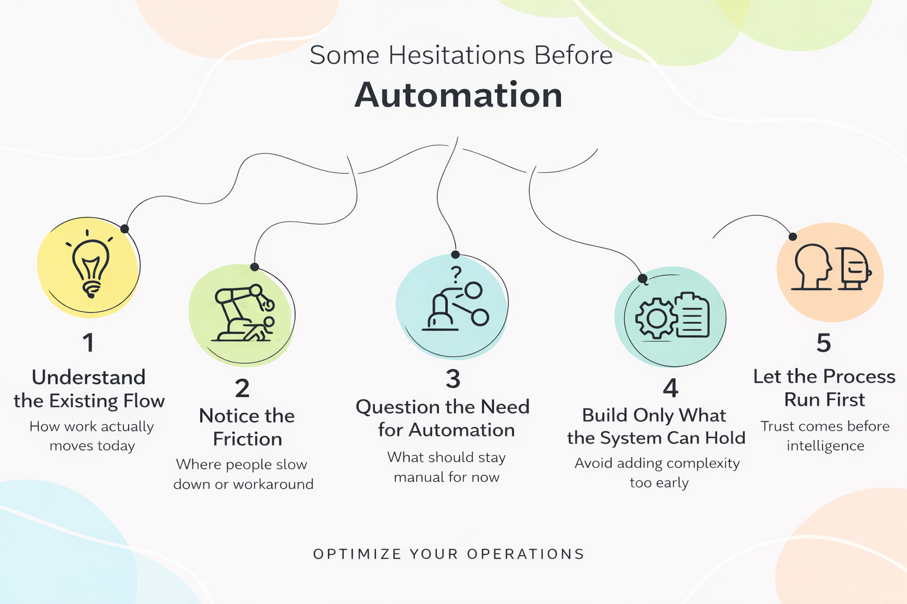

Some Thoughts and Hesitations on Automation
一些關於自動化的遲疑
Reflections on when automation helps, and when it might make things more complex

Before 2025, most of my work was related to design, digital fabrication workflows, and robotic arms.
I helped companies set up robotic fabrication labs, introduced new manufacturing methods and materials, and thought carefully about how to integrate these processes into existing factory operations.
During that time, what I learned was not only technical skills. More importantly, I learned many implicit system-level ideas.
The real difficulty was never the technology itself, but understanding:
- how the original process actually worked
- which parts would be affected first when a new system was introduced
- whether a blockage in one step would impact the entire workflow
These questions are usually not written in specifications. But if they are not thought through early, problems almost always appear later.
By 2024, I began to notice some ideas that were still not fully formed.
I realized that I was no longer only interested in whether a robotic arm could do something, but more curious about how an entire organization actually operates.
During a gap period in my career, I had opportunities to participate in technology-related discussions and collaborations in different contexts. Sometimes it was product design discussions, sometimes helping with development decisions, and sometimes writing code myself.
What surprised me during that time was that many of the process principles I learned on manufacturing floors could be applied to completely different industries.
More accurately, they shared similar underlying logic.
Later, as I worked with organizations at different levels of maturity, I noticed a common pattern across many companies I encountered:
they rely heavily on multiple software tools, processes, and human judgment, while many operational workflows still depend on Excel, manual consolidation, and experience-based knowledge transfer.
At first, I was not sure why I was drawn to this kind of environment. But through working and talking with them, I slowly realized one thing:
the "process requirements" users describe are often not what they truly need.
Instead of only listening to how they explain their processes, I became more interested in observing how they actually work, how they interact with existing workflows, and how they use the minimum viable models (MVPs) I build.
This approach strongly connects to what I learned from manufacturing systems in the past.
Because of this, throughout 2025, I spent a lot of time repeatedly asking myself these questions:
- Does this process really need automation?
- If we automate it now, will it actually make things more complex?
- Are there parts that should remain human-driven for now, instead of being handed to a system too early?
At the same time, starting in 2024, I also experimented with integrating AI into both hardware and software automation workflows.
However, after a full year of hands-on experience in 2025, I noticed something slightly counterintuitive.
For many small and medium-sized businesses, their existing processes are not yet systematic enough.
In this situation, introducing AI often brings limited benefits and can even create more doubt and distrust inside the organization.
What these companies truly need is often not "AI first," but a stable and understandable base process.
Only after that process has run for some time, and has been understood and trusted, can AI become a helpful support — rather than an extra burden.
Leave a Comment
留言
Share your thoughts and join the discussion
分享您的想法並參與討論